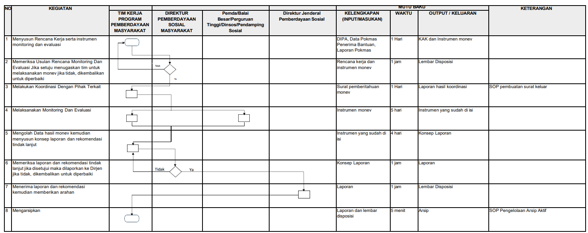

Monitoring dan Evaluasi
Alur pemantauan pelaksanaan program di lapangan, mulai dari rencana kerja dan instrumen monev sampai laporan, rekomendasi tindak lanjut, dan arahan pimpinan.
Deskripsi SOP
SOP Monitoring dan Evaluasi (Monev) mengatur pengawasan berkala terhadap pelaksanaan program di lapangan, untuk memastikan program berjalan sesuai tujuan dan menjadi dasar perbaikan program berikutnya.
Tim Kerja menyusun rencana kerja dan instrumen monev, yang diperiksa oleh Direktur Dayasosmas. Setelah berkoordinasi dengan pihak terkait, Tim Kerja turun ke lapangan bersama Pemda, balai besar, perguruan tinggi, dinsos, dan Pendamping Sosial. Data hasil temuan diolah menjadi laporan dan rekomendasi tindak lanjut, diperiksa Direktur, lalu disampaikan kepada Dirjen untuk mendapat arahan sebelum diarsipkan.
Pihak yang terlibat
- Tim Kerja Program Pemberdayaan Masyarakat
- Direktur Pemberdayaan Sosial Masyarakat
- Pemda / Balai Besar / Perguruan Tinggi / Dinsos / Pendamping Sosial
- Direktur Jenderal Pemberdayaan Sosial
Kualifikasi pelaksana
- Memahami program pemberdayaan masyarakat
- Memiliki kemampuan komunikasi publik
- Memiliki kemampuan pengumpulan, pengolahan, dan analisis data
- Mampu melakukan koordinasi
- Mampu menggunakan instrumen monev
- Mampu menyusun laporan dan rekomendasi hasil monev
Terkait dengan SOP
- SOP Pembuatan Surat Keluar
- SOP Pencairan Anggaran
- SOP Penanganan Arsip Aktif
Sarana dan pencatatan
- Sistem informasi Srikandi / SIKD (sikd.kemensos.go.id, srikandi.kemensos.go.id)
- Sarana prasarana pengolah data
- Website Survey Kemensos (survey.kemensos.go.id)
Flowchart

Tahapan kegiatan
Menyusun rencana kerja serta instrumen monitoring dan evaluasi
Tim Kerja
DIPA, data Pokmas penerima bantuan, laporan Pokmas
1 hari
KAK dan instrumen monev
Memeriksa usulan rencana monitoring dan evaluasi
Direktur Pemberdayaan Sosial Masyarakat
Rencana kerja dan instrumen monev
1 jam
Lembar disposisi
Jika setuju, menugaskan tim untuk melaksanakan monev. Jika tidak, dikembalikan untuk diperbaiki.
Melakukan koordinasi dengan pihak terkait
Tim Kerja
Surat pemberitahuan monev
1 hari
Laporan hasil koordinasi
Lihat SOP Pembuatan Surat Keluar.
Melaksanakan monitoring dan evaluasi
Tim Kerja bersama Pemda / Balai Besar / Perguruan Tinggi / Dinsos / Pendamping Sosial
Instrumen monev
5 hari
Instrumen yang sudah diisi
Mengolah data hasil monev, lalu menyusun konsep laporan dan rekomendasi tindak lanjut
Tim Kerja
Instrumen yang sudah diisi
4 hari
Konsep laporan
Memeriksa laporan dan rekomendasi tindak lanjut
Direktur Pemberdayaan Sosial Masyarakat
Konsep laporan
1 jam
Laporan
Jika disetujui, dilaporkan ke Dirjen. Jika tidak, dikembalikan untuk diperbaiki.
Menerima laporan dan rekomendasi, lalu memberikan arahan
Direktur Jenderal Pemberdayaan Sosial
Laporan
1 jam
Lembar disposisi
Mengarsipkan
Tim Kerja
Laporan dan lembar disposisi
5 menit
Arsip
Lihat SOP Pengelolaan Arsip Aktif.
Peringatan
Setiap tahapan akan mempengaruhi kelancaran kegiatan. Jika tahapan tidak dilakukan, akibatnya ketidaktepatan sasaran, keterlambatan, dan tidak tercapainya tujuan kegiatan.